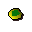
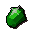

Emerald amulet

| Config name | unstrung_emerald_amulet |
| Item id | 1677 |
| Value | 1275 gp |
| Weight | 4g |
| Members | No |
| Tradeable | Yes |
| Stackable | No |
| Defined in | scripts/skill_crafting/configs/jewellery/amulets.obj |
Emerald amulet
It needs a string so I can wear it.
How to make
| Skill | Level | XP | Ingredients | Tool | How | Where | Makes |
|---|---|---|---|---|---|---|---|
| Crafting | 31 | 70.0 |  Emerald | interface | furnace | 1 |
Referenced in scripts
scripts/skill_crafting/scripts/jewellery/jewellery.rs2scripts/skill_crafting/scripts/jewellery/stringing.rs2